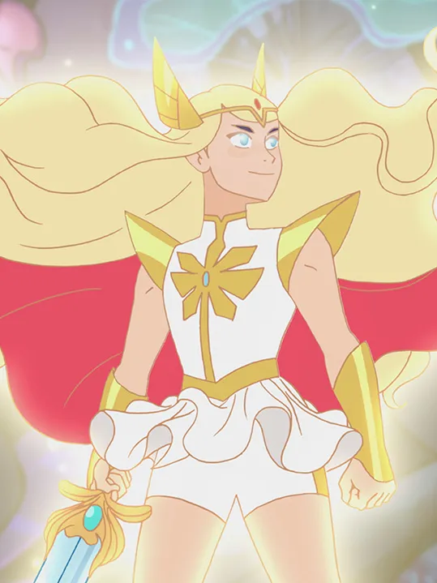
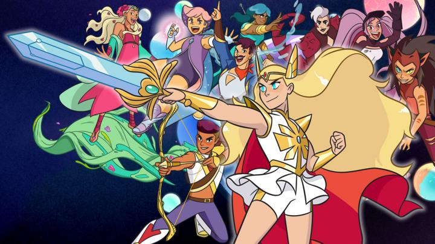

About She-Ra
She-ra is a hero and an LGBTQ icon.
She-Ra and her friends
Adora
In this series, Adora is a young teenage girl, portrayed as a willing member of the Horde who was raised to believe that the princesses are evil and oppress Etheria. When Adora is promoted to Force Captain, her world view greatly changed when she finds the Sword of Protection one day after sneaking out of the Horde base. She is soon captured by two rebels, Princess Glimmer and her best friend Bow, learning the truth that the Horde are the real oppressors. Upon the revelation and gaining the ability to become She-Ra, Adora joins the rebellion, winning over its hesitant members while struggling in mastering her powers.
Rebels
The Rebellion is an alliance of kingdoms and independent people lead by Angella (formerly), Glimmer and the Princess Alliance. It is dedicated to keeping Etheria free from The Horde. Click on the links below to learn more about them.